library( sf )Linking to GEOS 3.11.0, GDAL 3.5.3, PROJ 9.1.0; sf_use_s2() is TRUElibrary( maps )
library( mapproj )
library( ggplot2 )
library( tidyverse )
Everything is related to everything else, but near things are more related to each other. Tobler’s First Law of Geography1
Let’s start by loading in some of the libraries we’ll be using for this exercise.
library( sf )Linking to GEOS 3.11.0, GDAL 3.5.3, PROJ 9.1.0; sf_use_s2() is TRUElibrary( maps )
library( mapproj )
library( ggplot2 )
library( tidyverse )
This topics is the first
Describe the importance of Ellipsoids & Datum in spatial data.
Use both sf & ggplot in visualizing point data.
Be able to transform point data from one projection to another.
Unless you are in PHYS 101, the earth is not a perfect sphere (😉). It is an irregularly shaped object that we need to be able to characterize if we are going to develop a system of placing points onto it and doing things such as measuring distance, finding watersheds, or defining boundaries.
There has been a long history of ellipsoid research, all of which has been sought to increase our ability to map and move across the earth. The following table gives some historical and contemporary ellipsoids.
| Ellipsoid | Equatorial Radius (m) | Polar Radius (m) | Used |
|---|---|---|---|
| Maupertuis (1738) | 6,397,300 | 6,363,806.283 | France |
| Plessis (1817) | 6,376,523.0 | 6,355,862.9333 | France |
| Everest (1830) | 6,377,299.365 | 6,356,098.359 | India |
| Everest 1830 Modified (1967) | 6,377,304.063 | 6,356,103.0390 | West Malaysia & Singapore |
| Everest 1830 (1967 Definition) | 6,377,298.556 | 6,356,097.550 | Brunei & East Malaysia |
| Airy (1830) | 6,377,563.396 | 6,356,256.909 | Britain |
| Bessel (1841) | 6,377,397.155 | 6,356,078.963 | Europe, Japan |
| Clarke (1866) | 6,378,206.4 | 6,356,583.8 | North America |
| Clarke (1878) | 6,378,190 | 6,356,456 | North America |
| Clarke (1880) | 6,378,249.145 | 6,356,514.870 | France, Africa |
| Helmert (1906) | 6,378,200 | 6,356,818.17 | Egypt |
| Hayford (1910) | 6,378,388 | 6,356,911.946 | USA |
| International (1924) | 6,378,388 | 6,356,911.946 | Europe |
| Krassovsky (1940) | 6,378,245 | 6,356,863.019 | USSR, Russia, Romania |
| WGS66 (1966) | 6,378,145 | 6,356,759.769 | USA/DoD |
| Australian National (1966) | 6,378,160 | 6,356,774.719 | Australia |
| New International (1967) | 6,378,157.5 | 6,356,772.2 | |
| GRS-67 (1967) | 6,378,160 | 6,356,774.516 | |
| South American (1969) | 6,378,160 | 6,356,774.719 | South America |
| WGS-72 (1972) | 6,378,135 | 6,356,750.52 | USA/DoD |
| GRS-80 (1979) | 6,378,137 | 6,356,752.3141 | Global ITRS |
| WGS-84 (1984) | 6,378,137 | 6,356,752.3142 | Global GPS |
| IERS (1989) | 6,378,136 | 6,356,751.302 | |
| IERS (2003) | 6,378,136.6 | 6,356,751.9 |
The most common ones you will probably run across include GRS80/NAD83 (derived from satellite measurements of the distance of the surface to the core of the planet ) and WGS-84 (an ellipsoid based upon GPS).
To examine the differences between ellipsoids, let’s load in some data first. Here are some point data that can be interpreted as polygons and represent the lower 48 states of the US.
states <- map_data("state")
head( states ) long lat group order region subregion
1 -87.46201 30.38968 1 1 alabama <NA>
2 -87.48493 30.37249 1 2 alabama <NA>
3 -87.52503 30.37249 1 3 alabama <NA>
4 -87.53076 30.33239 1 4 alabama <NA>
5 -87.57087 30.32665 1 5 alabama <NA>
6 -87.58806 30.32665 1 6 alabama <NA>Each row is a point that is associated with a group (in this case the state) and is plot in a specific order (to make the outline of the state). There are 15,537 points required to make the plot, with the following 49 regions.
unique( states$region ) [1] "alabama" "arizona" "arkansas"
[4] "california" "colorado" "connecticut"
[7] "delaware" "district of columbia" "florida"
[10] "georgia" "idaho" "illinois"
[13] "indiana" "iowa" "kansas"
[16] "kentucky" "louisiana" "maine"
[19] "maryland" "massachusetts" "michigan"
[22] "minnesota" "mississippi" "missouri"
[25] "montana" "nebraska" "nevada"
[28] "new hampshire" "new jersey" "new mexico"
[31] "new york" "north carolina" "north dakota"
[34] "ohio" "oklahoma" "oregon"
[37] "pennsylvania" "rhode island" "south carolina"
[40] "south dakota" "tennessee" "texas"
[43] "utah" "vermont" "virginia"
[46] "washington" "west virginia" "wisconsin"
[49] "wyoming" Fortunately for us, our old friend ggplot has a bit of magic that can do this kind of plotting for us.
library( ggplot2 )
ggplot( states, aes( x = long,
y = lat,
group = group ) ) +
geom_polygon( fill = "lightgray",
color = "black",
lwd = 0.25) +
theme_void() -> pAn Azimuth Projection is one that is formed by a 2-dimensional plane that is tangential to the surface of the earth at example one point. This point may be polar (north or south pole) or oblique (e.g., over Richmond, Virginia).

We can apply different ellipsoids to the map when we plot it by adjusting the coordinate space it is plot within using the coord_map() modification. For a whole list of available projections, see ?mapproject.
p + coord_map( "azequalarea")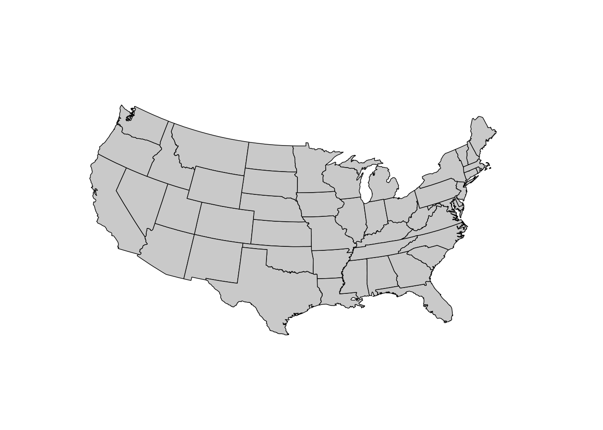
A cylindrical projection is one where a cylinder is wrapped around the earth creating straight lines for all parallel away from the equator.

p + coord_map("cylindrical")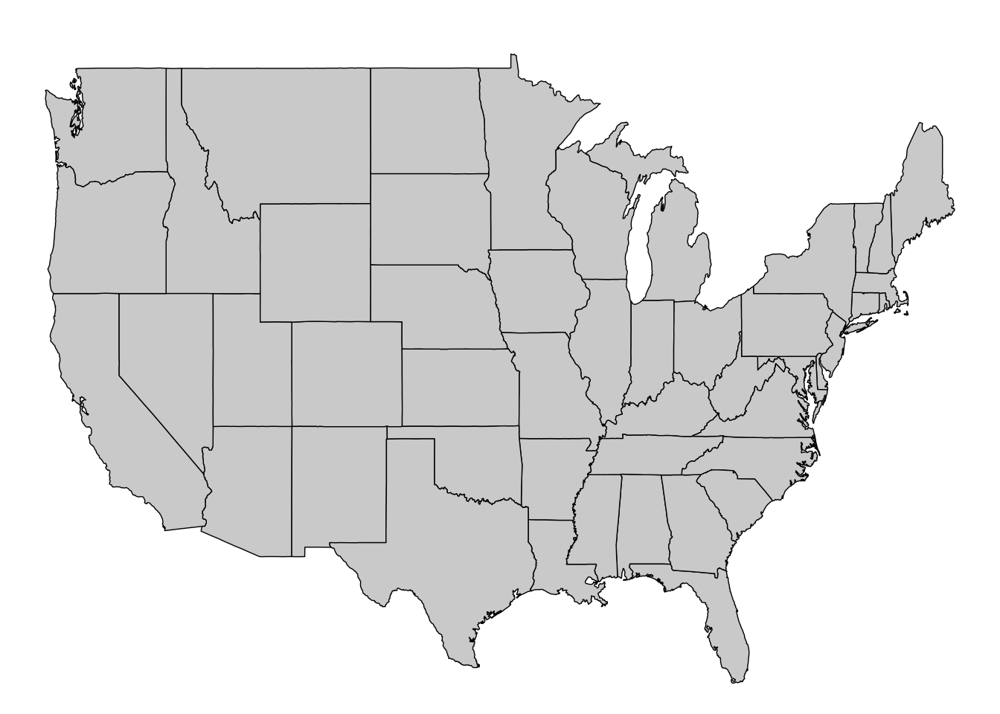
Conic projections are symmetric around the prime meridian and all parallels are segments of conecntric circles.

p + coord_map( "conic", lat0 = 30)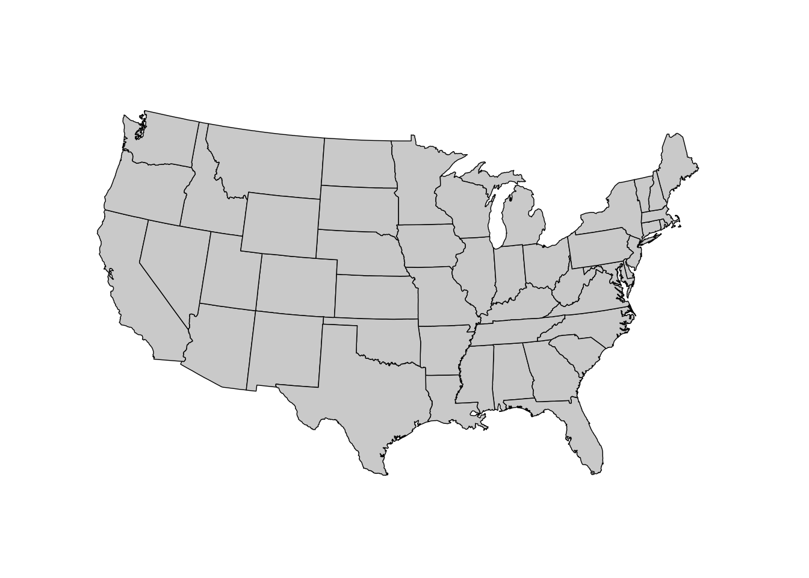
Once we have an ellipsoid model to work with we must define a DATUM type that will represent the coordiante system used. Two common DATUM types include:
| ⚠️ | You must set both the ellipsoid and datum to be EXACTLY THE SAME for all of your data before you can do any work with it. If they are not on the same lumpy bumpy planet or in the same coordinate system, you will be screwed (that is a technical term). |
Projections are a combination of the underlying elipse as well as the definition of the datum. There are literally thousands of recognized projections, each of which has to be able to be sufficiently defined such that we can convert from one recognized projection to another2.
One of the repositories for these projections can be found at epsg.io.

The EPSG Geodetic Parameter Dataset (also known as the EPGS3 registry) is a publc registry of datums, spatial reference systems, and earth elipsoids. Each item is assigned a specific EPSG code
The precise definitions of projections come in several different formats, some of which include:
Well Known Text (WKT)
GEOGCS["WGS 84",
DATUM["WGS_1984",
SPHEROID["WGS 84",6378137,298.257223563,
AUTHORITY["EPSG","7030"]],
AUTHORITY["EPSG","6326"]],
PRIMEM["Greenwich",0,
AUTHORITY["EPSG","8901"]],
UNIT["degree",0.0174532925199433,
AUTHORITY["EPSG","9122"]],
AUTHORITY["EPSG","4326"]]PROJ.4
+proj=longlat +datum=WGS84 +no_defs If you work with ESRI software, when you have a projected shapefile, one of the several files that go with that shapefile is the .prj file which will contain the ESRI WKT below.
GEOGCS["GCS_WGS_1984",DATUM["D_WGS_1984",SPHEROID["WGS_1984",6378137,298.257223563]],PRIMEM["Greenwich",0],UNIT["Degree",0.017453292519943295]]| Always let the underlying software make any changes to projection information. There is a lot of difficult conversions that need to happen to reproject from one CRS to another. | 🌎 |
To start off, we will load in some data from the bark beetle, Araptus attenuatus, a Sonoran Desert endemic parasite that lives within the plant Euphorbia lomelii.
|
|
|
As part of some work that we have done on these species, we have looked at the relationship between habitat suitability and sex ratio bias. The life history for this beetle is such that males will establish home by burrowing in the senescing tissues of the host plant. Once established, feamles are attracted via phermones.
url <- "https://raw.githubusercontent.com/dyerlab/ENVS-Lectures/master/data/Araptus_Disperal_Bias.csv"
read_csv( url ) %>%
select( Site, Longitude, Latitude, everything() ) %>%
arrange( Latitude ) -> data Rows: 31 Columns: 9
── Column specification ────────────────────────────────────────────────────────
Delimiter: ","
chr (1): Site
dbl (8): Males, Females, Suitability, MFRatio, GenVarArapat, GenVarEuphli, L...
ℹ Use `spec()` to retrieve the full column specification for this data.
ℹ Specify the column types or set `show_col_types = FALSE` to quiet this message.summary( data ) Site Longitude Latitude Males
Length:31 Min. :-114.3 Min. :23.29 Min. : 9.00
Class :character 1st Qu.:-113.1 1st Qu.:24.95 1st Qu.:16.00
Mode :character Median :-112.0 Median :26.64 Median :21.00
Mean :-112.0 Mean :26.44 Mean :25.68
3rd Qu.:-110.8 3rd Qu.:27.78 3rd Qu.:31.50
Max. :-109.3 Max. :29.33 Max. :64.00
Females Suitability MFRatio GenVarArapat
Min. : 5.00 Min. :0.0563 Min. :0.5938 Min. :0.0500
1st Qu.:15.50 1st Qu.:0.2732 1st Qu.:0.8778 1st Qu.:0.1392
Median :21.00 Median :0.3975 Median :1.1200 Median :0.2002
Mean :23.52 Mean :0.4276 Mean :1.1598 Mean :0.2006
3rd Qu.:29.00 3rd Qu.:0.5442 3rd Qu.:1.3618 3rd Qu.:0.2592
Max. :63.00 Max. :0.9019 Max. :2.2000 Max. :0.3379
GenVarEuphli
Min. :0.0500
1st Qu.:0.1777
Median :0.2171
Mean :0.2203
3rd Qu.:0.2517
Max. :0.5122 We can plot these points using the normal ggplot functions (map overlays below).
library(ggrepel)
data %>%
ggplot( aes( Longitude, Latitude ) ) +
geom_label_repel( aes(label=Site) ) +
coord_map()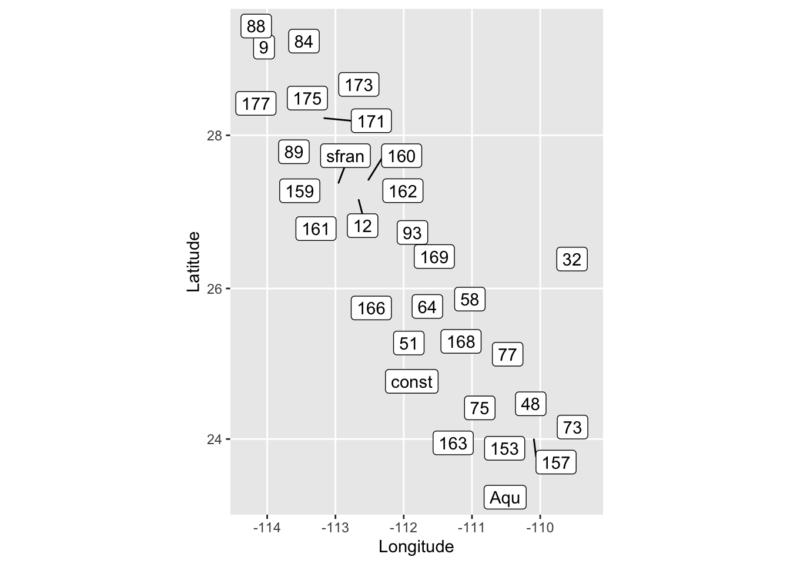
We can also plot these locations and fill in some interpretive data using the leaflet library to create an interactive map as follows:
library( leaflet )
data %>%
mutate( Label = paste( "<b>Site:", Site,
"</b><hr>\nFemales:", Females,
"<br>Males: ", Males,
"<br>Suitability:", Suitability) ) %>%
leaflet() %>%
addMarkers( ~Longitude, ~Latitude, popup = ~Label ) %>%
addProviderTiles( "OpenTopoMap" )Make sure to click on one of the markers and see the popup information that we added en route via that mutate and some HTML code.
In this case, we are using the latitude and longitude as numerical values of which the leaflet library is able to intrepret properly. However, just like we did for date-like data, we can convert these into a geographically relevant data type that knows a lot about geospatial processes rather than keeping it as a numeric value that we “assume” will work properly. For this we will use the sf library.
sf ObjectsSimple Features (hereafter abbreviated as sf) are an open standard developed by the Open Geospatial Consortium (OGC). They define the following basic types:
Each of these basic types can be represented within a single column of a data.frame. To do this, we need to tell the conversion function st_as_sf() which columns to consider as the datum and which ellipsoid to use.
library( sf )
data %>%
st_as_sf( coords=c("Longitude","Latitude"),
crs = 4326 ) -> data
head( data )Simple feature collection with 6 features and 7 fields
Geometry type: POINT
Dimension: XY
Bounding box: xmin: -110.951 ymin: 23.2855 xmax: -109.8507 ymax: 24.21441
Geodetic CRS: WGS 84
# A tibble: 6 × 8
Site Males Females Suitability MFRatio GenVarArapat GenVarEuphli
<chr> <dbl> <dbl> <dbl> <dbl> <dbl> <dbl>
1 Aqu 12 9 0.722 1.33 0.120 0.0968
2 73 11 5 0.146 2.2 0.137 0.253
3 157 26 30 0.881 0.867 0.150 0.191
4 153 35 41 0.732 0.854 0.333 0.276
5 163 21 21 0.433 1 0.298 0.338
6 48 18 27 0.620 0.667 0.115 0.213
# ℹ 1 more variable: geometry <POINT [°]>This conversion to an sf object adds attributes to the data.frame and tibble object.
class( data )[1] "sf" "tbl_df" "tbl" "data.frame"This additional sf attributes gives it more qualities such as a bounding box (e.g., the area within which all the poitns exist)
st_bbox( data ) xmin ymin xmax ymax
-114.29353 23.28550 -109.32700 29.32541 Distances between objects.
st_distance( data[1,], data[2,])Units: [m]
[,1]
[1,] 84376.8As well as complex geospatial operations such as finding the convex hull (the minimal area containing all poitns).
data %>%
st_union() %>%
st_convex_hull() -> hull
hullGeometry set for 1 feature
Geometry type: POLYGON
Dimension: XY
Bounding box: xmin: -114.2935 ymin: 23.2855 xmax: -109.327 ymax: 29.32541
Geodetic CRS: WGS 84POLYGON ((-114.2935 29.32541, -113.9914 28.6605...the center of the all the points.
hull %>%
st_centroid()Geometry set for 1 feature
Geometry type: POINT
Dimension: XY
Bounding box: xmin: -111.3417 ymin: 26.37741 xmax: -111.3417 ymax: 26.37741
Geodetic CRS: WGS 84POINT (-111.3417 26.37741)and the area enclosed by all the points (for various units).
library( units )udunits database from /Library/Frameworks/R.framework/Versions/4.3-arm64/Resources/library/units/share/udunits/udunits2.xmlhull %>%
st_area() %>%
set_units( km^2 )122130.5 [km^2]In addition to the operations above, properly created sf objects can easily be projected from one CRS into another (epsg 6372 is a common projection covering Mexico based upon the GRS80 elipsoid and the latest ITRF2008 datum standard based on the meter)4.
data %>%
st_transform( 6372 ) %>%
st_bbox() xmin ymin xmax ymax
1307745 1274010 1773676 1968473 Again, do this first to all your data to make sure it is put into a proper projection (and most of your headaches will disappear).
sf ObjectsAnalogous to the duality between built-in R plotting and ggplot approaches, we can use either of these frameworks to plot sf objects.
As built-in objects, a sf data set that has a geometry coordinate is intrinsically linked to all the other data columns. If we plot the entire data frame, we see that for each non-geometry data column, we create an individual plot.
plot( data )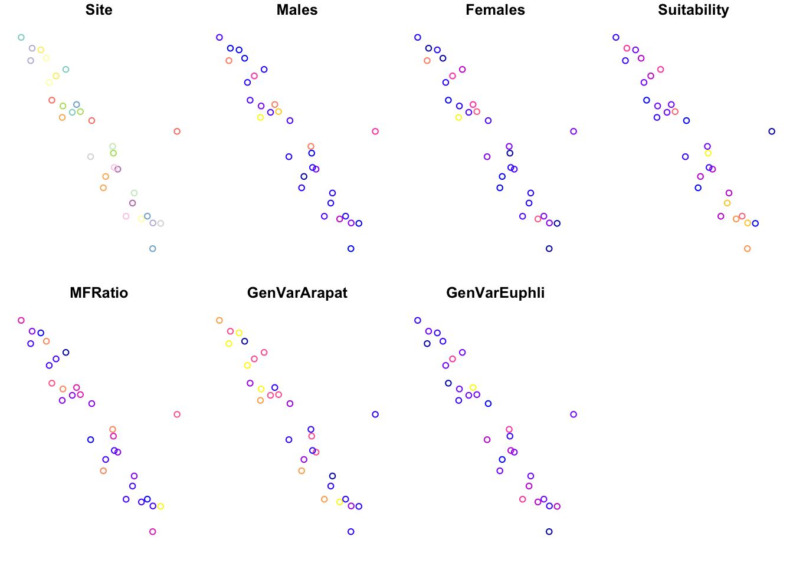
The data with the data.frame can be accessed as normal.
plot( data$Suitability )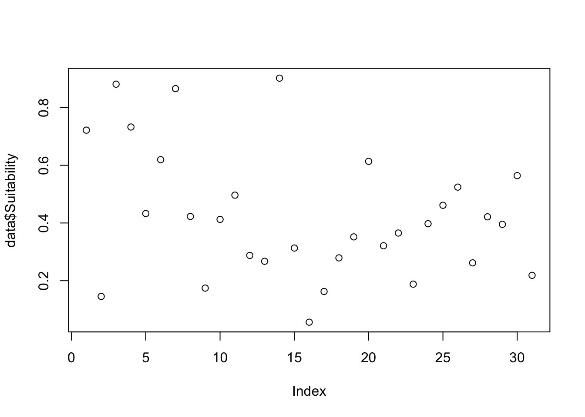
But if we plot it using the square brackets and names of dat columns, we can link the geometry column to it and plot it as a spatial representation of those data (and adorn it with the normal plot() upgrades accordingly).
plot( data["Suitability"], pch=16, cex=2)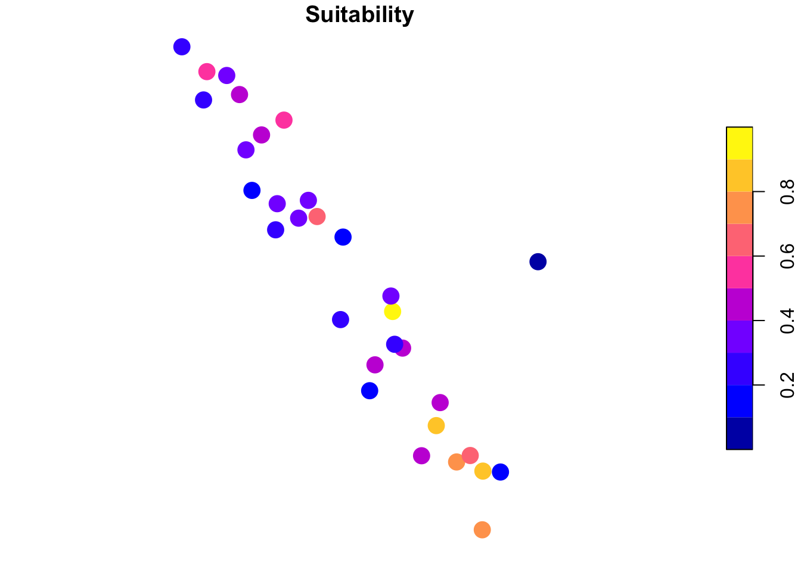
Perhaps not surprisingly, ggplot() also works the same way, however, the geospatial coordiantes for the plot aare taken care of using geom_sf() and you are left with definining which of the data columns you want to put into the plot as a component of the aes() definition.
ggplot( data, aes(color=Suitability) ) +
geom_sf( )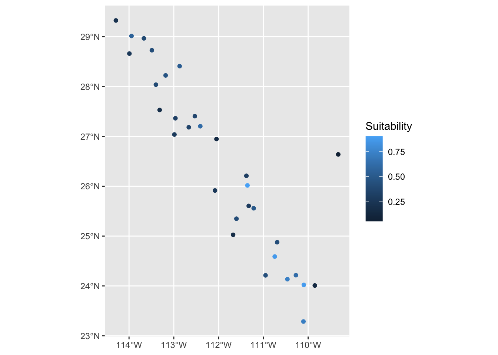
It works the same ways for lables.
ggplot( data ) +
geom_sf_text( aes(label=Site) ) +
theme_void() +
coord_map()Warning in st_point_on_surface.sfc(sf::st_zm(x)): st_point_on_surface may not
give correct results for longitude/latitude data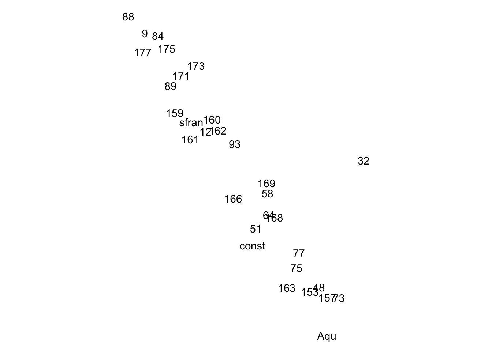
We can go out and grab a map background to overlay these plots onto, giving more context (similiarly to how we did this above using leaflet).
The map_data() function is part of ggplot() and produces a data.frame object where each row is a coordinate used to draw polygons (see narrative on polygons for more information).
map_data("world") %>%
filter( region == "Mexico") -> map
head( map ) long lat group order region subregion
1 -91.68369 18.67734 970 60731 Mexico Isla del Carmen
2 -91.79614 18.65420 970 60732 Mexico Isla del Carmen
3 -91.81612 18.67588 970 60733 Mexico Isla del Carmen
4 -91.58911 18.77803 970 60734 Mexico Isla del Carmen
5 -91.55029 18.77368 970 60735 Mexico Isla del Carmen
6 -91.53672 18.76001 970 60736 Mexico Isla del CarmenIn ggplot there is a geom_polygon() function that takes these series of coordiantes and draws them properly over which we can lay down the sf object.
However, notice that the boundary boxes for the data and the map are vastly different (the underlying map is much bigger).
cbind( Data = st_bbox( data ), Map = c(min(map$long), min(map$lat), max(map$long), max(map$lat) ) ) Data Map
xmin -114.29353 -118.40137
ymin 23.28550 14.54541
xmax -109.32700 -86.69629
ymax 29.32541 32.71533So if we plot it as is, we have points only in a small area of the plot.
ggplot( ) +
geom_polygon( aes( x=long,
y=lat,
group=group ),
data=map,
fill="grey" ) +
geom_sf( data=data,
aes(color=Suitability),
size=2) +
xlab("Longitude") +
ylab("Latitude") +
theme_bw( base_size = 12 ) 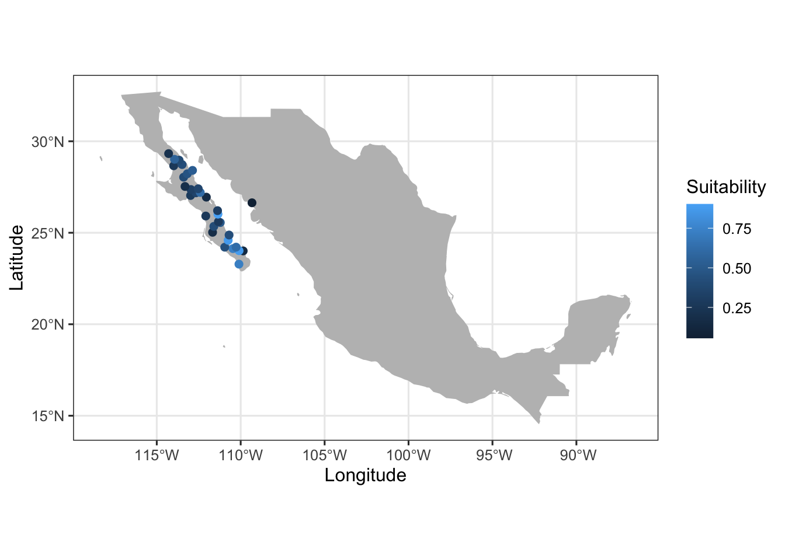
In a normal ggplot() display we could use + xlim() + ylim() but since we are combining both geom_polygon and geom_sf, we are required to do this in the coord_sf() function to make it work correctly5.
ggplot( ) +
geom_polygon( aes( x=long,
y=lat,
group=group ),
data=map,
fill="grey" ) +
geom_sf( data=data,
aes(color=Suitability),
size=2) +
xlab("Longitude") +
ylab("Latitude") +
theme_bw( base_size = 12 ) +
coord_sf( xlim = c(-115, -105),
ylim = c(20, 30) )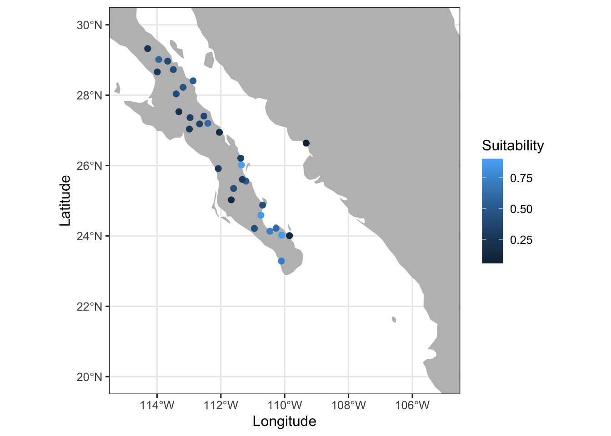
Translation from one CRS to another in all GIS software is handled by the open source proj.org library.↩︎
The EPSG standard was originally created in 1985 by the https://en.wikipedia.org/wiki/European_Petroleum_Survey_Group and made public in 1993.↩︎
This standard is defined by Sistema Nacional de Información Estadística y Geográfica.↩︎
This is because if we use the normal procedures, we mess up the order in which everything is plot in geom_polygon(), try it and see.↩︎


{kind=link}